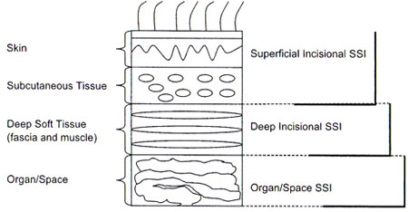

Surgical Site Infection
DEFINITIONS
Cellulitis
Infection-related erythema of skin without drainage or fluctuance.
Abscess
Localised collections of purulent fluid within tissue.
Necrotising soft tissue infections
Widely invasive infections that rapidly cause tissue necrosis
- myonecrosis where underlying muscle involved.
- exceedingly unusual in post-op period (Barie).
Superficial / Deep / Organ Space SSI
(Center for Disease Control Definition)

D E A B M I M
EPIDEMIOLOGY
Incidence
~3% of all surgical procedures.
Up to 20% pts undergoing emergency intra-abdominal procedures.
Note on Wound Contamination
Risk stratification for SSI
1. Clean
Only integumentary and musculoskeletal soft tissues affected.
2. Clean-contaminated
Hollow viscus opened under controlled circumstances.
3. Contaminated
Bacteria introduced extensively into normally sterile tissue, brief
so that infection would not be established during surgery.
- eg penetrating abdo trauma, enterotomy during adhesiolysis for
mechanical bowel obstruction
4. Dirty
Surgery is performed to control established infection.
Risk factors
* = major recognised factors
Risk increases with number of risk factors irrespective of
contamination
- and almost without regard of type of operation.
Personal
Age
*ASA
Smoking
*Wound contamination classification
Environmental
Inadequate skin antisepsis
Inadequate ventilation
Contaminated surgeon / equipment
Predisposing conditions
Amputations
Ascites
Chronic inflammation
Corticosteroids (controversial)
*Obesity (RR 1.78)
*Diabetes (RR 2.29)
Hypoalbuminaemia
Hypercholesterolaemia
Hypoxaemia
PVD
Post-op anaemia
Prior site irradiation
Recent operation
Remote infection
Skin carriage of staph
Skin disease around infection
Trauma (profoundly immunosuppressive)
- especially when cold, shocked, dirty
Undernutrition
Treatment factors
Drains
Emergencies
Hypothermia
Inadequate AB prophylaxis
Oxygenation
Prolonged preop hospitalisation
*Prolonged operative time
- where >75th percentile
Open surgery
- laparoscopic biliary, colon and gastric are -1 risk cf open.
National Healthcare Safety Network Risk Index
Uses wound class, ASA, length of operation >75% centile.
D E A B M I M
AETIOLOGY
Pathogenesis
Inoculation occurs during surgery
- either inward from skin, or outward from organ under operation.
Microbiology
Depends on type of operation, but most are:
- gram +ve cocci including Staph aureus (19%)
- coag -ve Staph epidermidis (14%)
- enterococcus species (12%)
These are skin derived mostly.
Enteric aerobic (eg E. coli 8%) or anaerobic (B. fragilis 3%) become
important in pharyngoesophageal / GI surgery.
Also commonly isolated are pseudomonis (8%) and klebsiella (4%).
D E A B M I M
BIOLOGICAL BEHAVIOUR
Natural history
Many SSIs develop in first 5-10days.
- may develop as long as 30d post-surgery.
D E A B M I M
MANIFESTATIONS
Pain
Redness
Swelling / fluctuance
Ooze
Fever
Etc.
D E A B M I M
INVESTIGATIONS
Pus swabs are rather pointless due to contaminants.
- tissue spec or pus aseptically collected into a syringe are
helpful.
D E A B M I M
MANAGEMENT
Prevention
Correct the correctable medical problems.
- good glycaemic control
- preop hyperglycaemia associated with increased SSI.
Allow open skin lesions to heal.
Quit smoking
Shower with antimicrobial soap the night before theatre.
- eg providone-iodine soap scrub (often omitted)
Avoid shaving the night prior.
Encourage idealisation of weight.
- if malnourished, as little as 5d of enteral nutrition reduces the
SSI risk significantly.
Treat S. aureus carriage
- 2% mupirocin to the nares of carriers reduces incidence of SSI in
this group.
Antibiotic prophylaxis
See card.
Operating Room Practice
Attentive to personal hygeine.
Clip hair, don't shave.
A brief rinse at the scrub bay followed by alcohol hand gel is
equivalent to a long scrub routine.
- this is proven by meta-analysis of RCTs
- chlorhex better than providine as well.
20% of gloves fail at the operation
- regularly inspect.
Supplementary oygen.
Most gowns protect for 1.5-2 rs at most against strikethrough.
- may be prudent to change every 2hrs or so.
If the surgeon is a carrier of S. aureus in the nares, eliminate
- cover nose and mouth at all times
- keep unnecessary traffic to a minimum.
Avoid hypothermia(!)
- normothermia = good for wound risk; better blood flow and oxygen
tension at wound.
- hypothermia vasoconstricts and impairs immune function at wound.
What is most important?
- proper antibiotics
- proper hair removal
- glucose control
- normothermia.
Managing the incision
Closure of contaminated wounds increases SSI.
- handle tissue gently.
- keep electrocautery to a minimum.
Can a contaminated incision be
closed primarily?
- surgeons or pts do not like open wounds.
- evidence is mixed.
- can close muscle-splitting appendicectomy wounds.
- one large study shows large midline incisions closed primarily
when contaminated failed more often with greater cost and failure
rates.
Drain in the incision?
Cause more infections than they prevent in clean or
clean-contaminated wounds.
- prevents epithelialisation and drain becomes a portal for
introduction of bugs.
- don't use them for the incision.
Should I irrigate the wound?
Controversial. No evidence for routine washing of incisions with
saline.
High pressure pulse-irrigation may be beneficial.
Topical antibiotics in the would can help but topical antiseptics
probably preferred due to less resistance development.
What about future high-tech
solutions?
Impregnated barriers and antibiotic-impregnated sutures in the
pipeline; no conclusive cost-benefit evaluation yet.
Antimicrobial dressings of questionable benefit beyond 24 hrs when
wound epithelialisation has occured.
Post-Operative Prevention
Blood transfusion
Avoid if possible - expanding body of evidence.
Even a single unit transfusion has shown a greater risk.
- increases with total transfusion volume.
- recent meta-analysis suggests triple risk of nosocomial infection
from any volume of blood
given (see Barie).
- cahnges in oxygen affinity, circulation time, cytokine generation
probably responsible, amongst other things.
Hb concentrations >7g/dL well tolerated in most - avoid
transfusion if possible.
Transfusing critically ill pts increases infections, may worsen
organ dysfunction and increases mortality.
Sugers and nutrition
Hyperglycaemia impairs netrophils and phagocytosis.
- increases risk of infections and worsens sepsis outcome.
- tight control during surgery also decreases risk.
- in a large trial of critically ill post-op pts, exogenous insulin
to keep glucose <11 associated with 40% mortality decrease, fewer
nosocomial infections and less organ dysfunction.
Try to avoid parenteral nutrition: not greatly efficacious short
term and may cause hepatic dysfunction.
- every chance use enteral feeding, including trying promotility
agents like erythromycin.
- early enteral feeding within 36hrs decreases nosocomial infection
by >50% in critically ill and injured pts.
Oxygenation.
Conflicting results from trials here.
- among 500pts undering elective colorectal surgery, 80% O2 during
and 2-hrs post op decreased SSI by >50%.
- another trial showed a great increase post oxygenation!
Controversial until further evidence availabl.e
Treatment
Incise and drain.
- then basic wound care: topical saline soaked dressings are enough.
- no need for chemicals: can suppress fibroblast proliferation.
Take wound swabs
- increasing need in era of resistant organisms.
Treat associated conditions
- remove any necrotic material.
- control complicating factors.
Antibiotics are not required when opening and drainage achieved and
no cellulitis.
- else early emperic antibiotics.
The opened wound is very large
Closure by 2o intention can be prolonged and disfiguring.
Close it again when settled.
Vacs are being used more and more commonly: no Class 1 evidence yet.
MRSA and Other Current Issues
MRSA now the leading cause of post-operative SSI in vascular
patients in some leading reports
- nearing 50% of all US isolates in this context.
- associated with higher mortality, higher cost, longer stays.
Preventative bundles can include:
- nasal screening at admission, transfer or discharge
- contact isolation
- standardized hand hygiene and practices
- cultural campaign with stuff
- ongoing monitoring of process and outcome measures
Proliferation of community-acquired MRSA has significantly impacted
SSI rates
Use of mupirocin for nasal decontamination if found is controversion
- no reduction in SSI in studies.
D E A B M I M
REFERENCES
Barie et al. Surg Clin N Am, 85(2005):1115-35.
Cameron